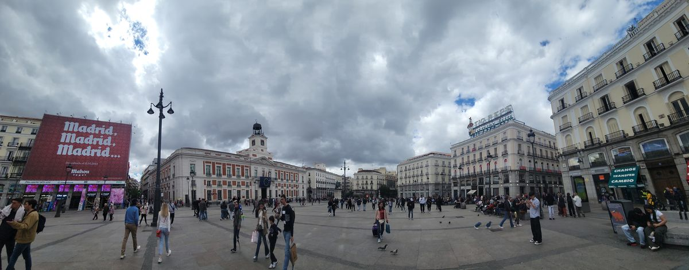
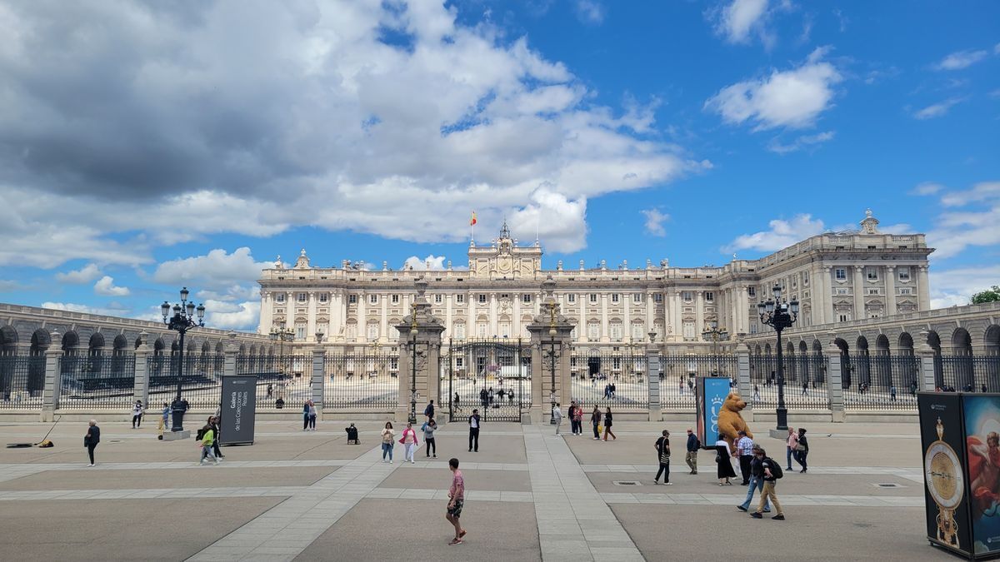
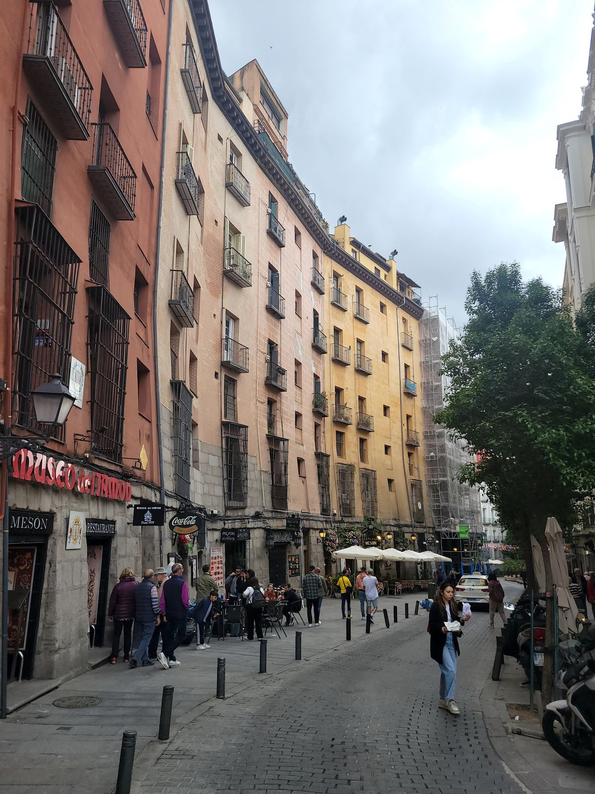
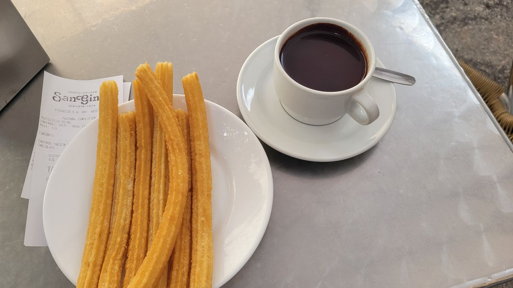
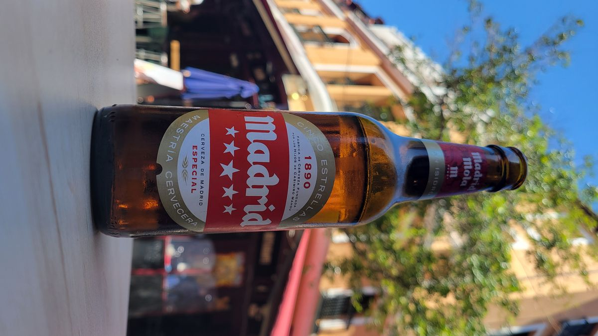
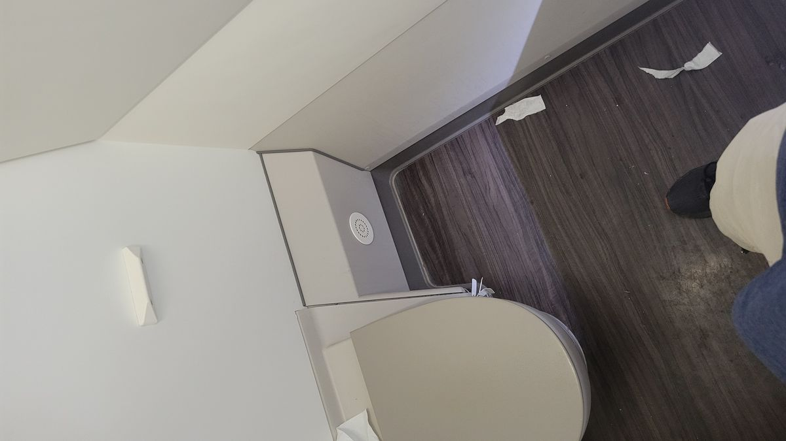

Madrid, Spain
Favorable winds gave us a good push across the Atlantic last night and we arrived over 20 mins early to Madrid’s Barajas airport, keeping our intercontinental jaunt to under 10 hours. A welcome start to part 2 of this adventure.
I’ve been to Spain a few times before, but my previous adventures have kept me along its southern coast. I’ve never been to the capital. After trying to figure out Madrid’s metro system on a Sunday morning I arrived to my hostel late in the morning. Unfortunately, hostel management in these parts of the world are not as keen to give you an available bed when you arrive. Even after 10-hour, transcontinental red eyed flight. The instruct me to leave my bags in the storage closet for a few hours and explore the neighborhood. Easier said than done.
Every Sunday this neighborhood hosts the El Rastro market, Madrid’s largest open air flea market. The streets were beyond crowded as vendors hawked novelties, t-shirts and cheap clothes. Nothing spectacular, just that the market stretched blocks and blocks. I honestly wouldn’t recommend this even if you’re visiting, unless you really are interested in buying stuff you really don’t need. I found a Rey de Hamburguesa (just kidding it’s just Burger King here also) and people watched for a few minutes while taking in a calorie bomb American fast-food burger.
Eventually, the hostel let me check in and after unpacking my bag into my locking storage drawer, I laid down on the bed and closed my eyes, screwing up my circadian rhythm for the next few days. Jet Lag going east is always the worst and when I woke up at 7pm ready to take on the new day I knew I was screwed. I choose to rest as much as possible that night and get my day started bright and early, this time with the sun. It would be a rough, few days in Madid.
While Madrid is a European capital it seems to never be on many people top 3. A famous Spanish filmmaker, Pedro Almodóvar, even said once that “The Only thing in Madrid is what you bring with you.” While his quote may be a little dramatic, it’s not that it doesn’t hold true in some ways. The main attractions of the city can be done in a few days, add a couple more if you’re an Art fan and off the other Spanish locales you go.
But what there is in Madrid definitely should not be dismissed. Sights like he Plaza Mayor, Palacaio Real, or just sampling Churros and Hot Chocolate (think more like a hot pudding than the beverage us EstadoUnideses know).





It took a few days, but I think I got a hold of the jet lag, just in time to move onto a new locale.
